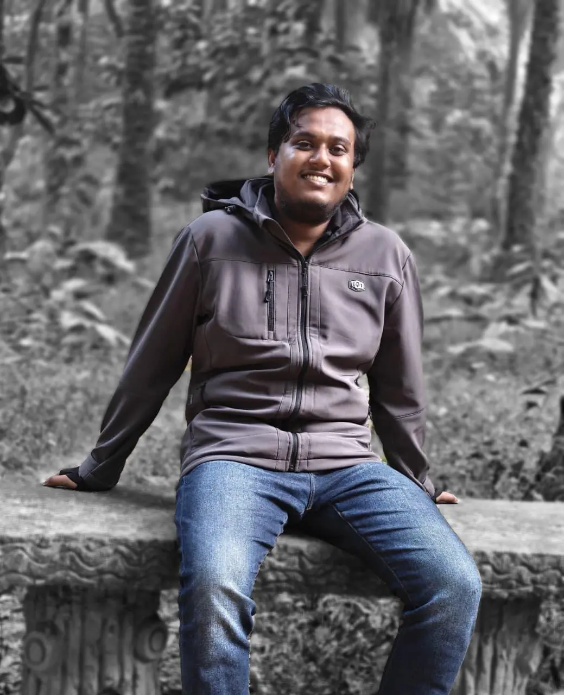

ELECTRONICS & COMMUNICATION ENGINEER
Sheikh Srabon
Ahmed Shakib
ECE Student | Electronics Enthusiast | ML Developer
Passionate about electronics, circuit design, embedded systems, and machine learning. Engineering the bridge between hardware precision and intelligent software.

Acadmic Journey
As a KUET ECE student, I bridge the gap between abstract algorithms and physical silicon. My focus lies at the intersection of embedded systems and artificial intelligence.
Robotics & Automation
Designing intelligent robotic systems and autonomous navigation frameworks using ROS and customized sensor fusion algorithms.
Digital Electronics
Expertise in digital logic design, creating complex counting systems and buzzer architectures using discrete components.
Technical Arsenal
Selected Works:
Engineering solutions from discrete logic to deep learning.
Let's Collaborate
Whether it's a circuit design challenge, an AI project, or just a technical discussion—I'm always open to new opportunities.
- Location
- Socials